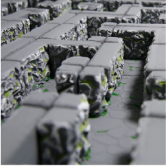
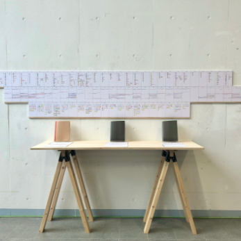
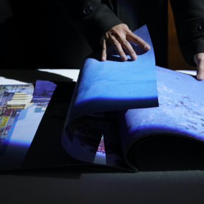
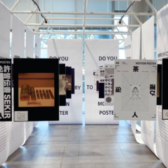
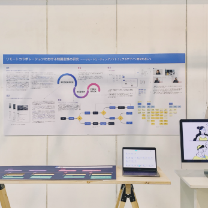
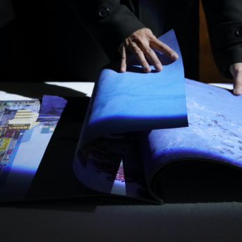
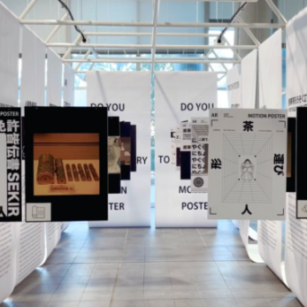
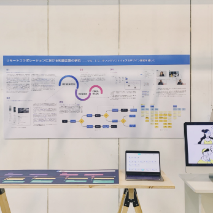
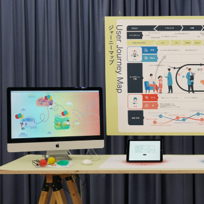
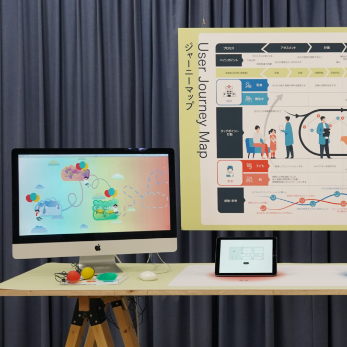

回転迷路：ボードゲームのデザインとその体験についての研究
TANG YU


 





 

客観的なパッケージ＋可視化日記
YUAN YINGZHUO
メイはどこに行った。
JIN LAN
氷河の消える
FAN YADI
AR MOTION POSTER OF JAPANESE SCIENCE AND TECHNOLOGY
YU LIRONG
Light Meeting：時間を超えるリモート会議のソフトウエアデザイン
YE MEI
Fake World ：フェイクニュースの視覚的な表現研究
NI QIANYI
ShareLab：信頼関係の視点から中国の工場における制作をサポートするサービスデザイン研究
Cai Ning
風船のリズムアドベンチャー：子供のリハビリテーションのゲームシステム
CHENG MING